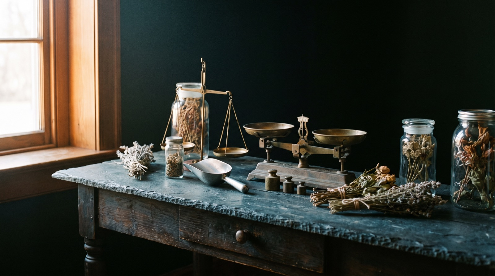
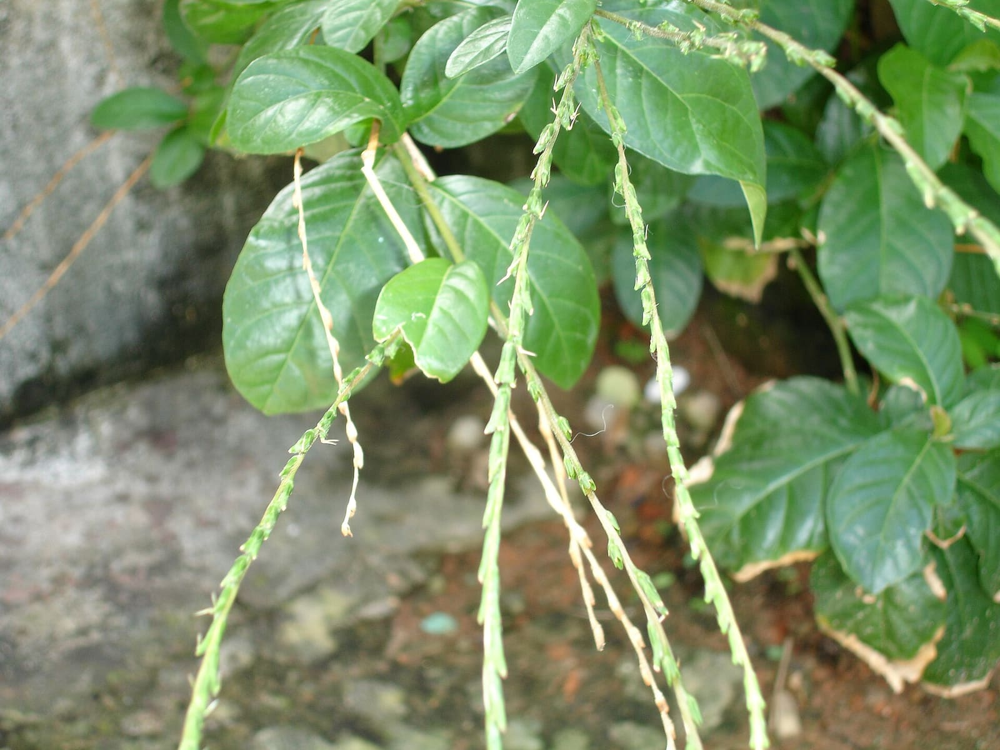
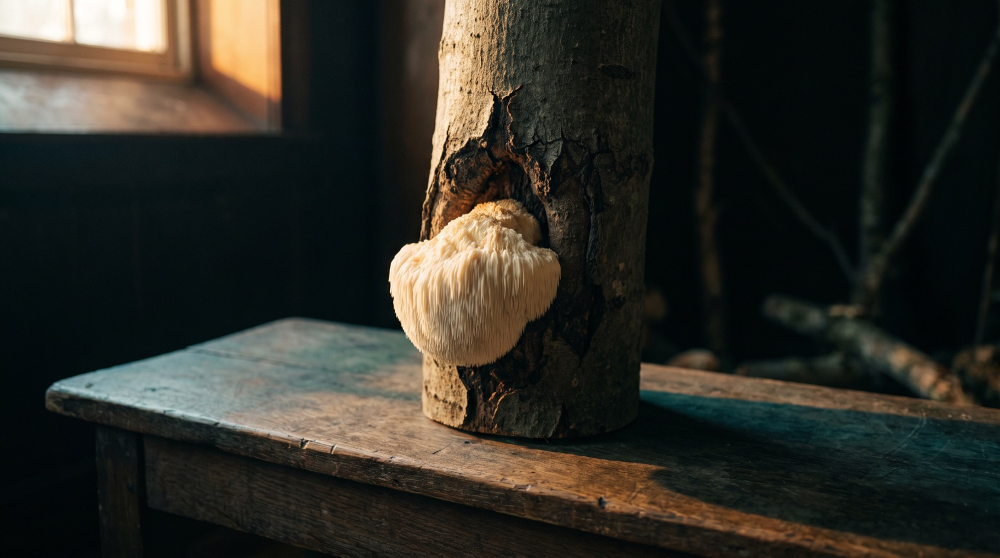
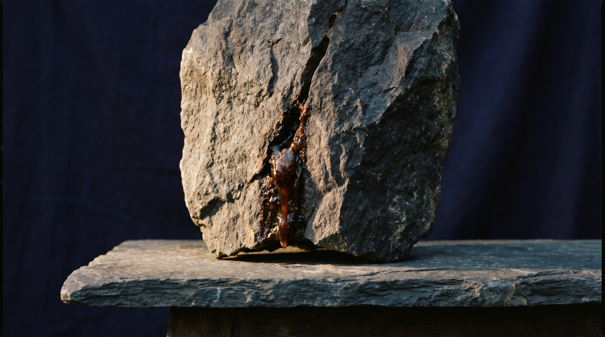
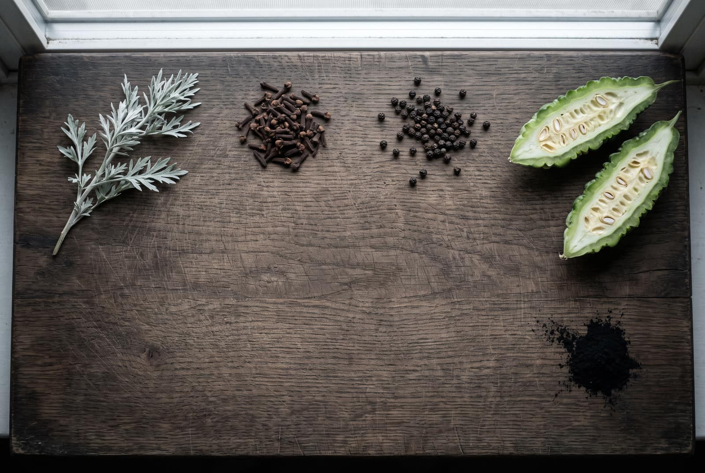
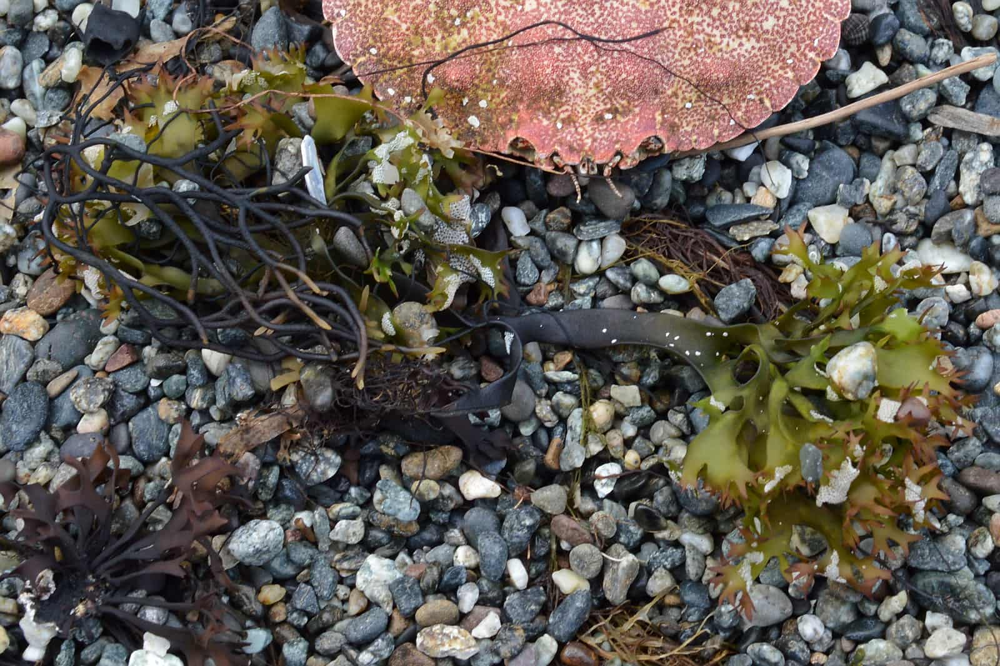
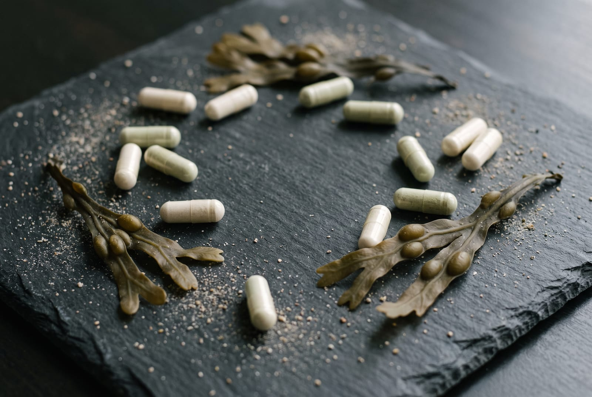
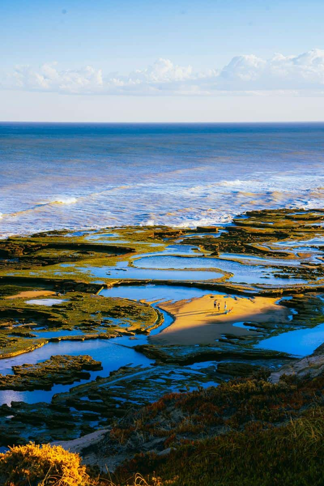
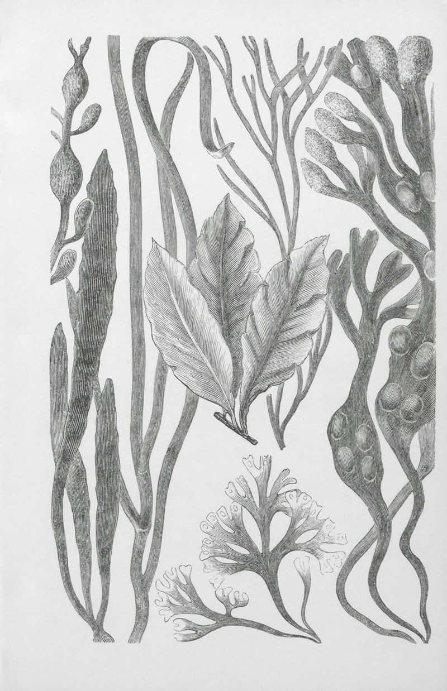

The journal
What is in the jar
The questions we get asked in the shop, written up. What a plant is, how to tell the real one from the copy, how to take it and who should not. There are no health claims in any of it, which is the rule we work to and the reason the rest can be trusted.

How to read a supplement label. The front is marketing. The back is the product.
People bring me pots to look at far more often than they buy anything, and the first thing I ever do is turn the pot round. This is that turn, written down: the front of the pack, the ingredients panel line by line, what the fillers are actually for, the cost per day arithmetic, and how to tell a claim that is allowed from one that is not.

Anamu, and why it smells like that
Petiveria alliacea smells of garlic and onion, and the smell does not stay in the pot. That is the first honest thing anybody should tell you about this plant, and almost nobody does. Here is the plant, the sulphur chemistry behind the smell, how to read a pack, and the long list of people I would not sell it to.

Lion’s mane. Fruiting body, grain, and the number nobody prints.
Most of the mushroom capsules sold in this country are mycelium grown on cereal grain, and the grain is milled in with them. It is printed on the back of the pot, in words chosen not to mean much. This is how to read them, and what an honest label would say instead.
Pau d'arco. The inner bark is the whole point.
A South American tree, four common names, three botanical ones, and a bag of tea that is usually mostly the wrong part of the trunk. This is how I tell inner bark from outer bark across the counter, and what I am and am not allowed to tell you about either.

Shilajit. How to tell resin from tar.
Most of the shilajit sold online is cut with something, and some of it was never shilajit at all. The material has a set of physical habits that are difficult and expensive to imitate, so you can check a jar yourself with a glass, a kettle and a fridge. Here is the whole method, in the order I would run it.

Wormwood, and why Decolonise has a stop date
Decolonise is a bitter. Nine ingredients, and one of them is Artemisia absinthium. Wormwood is taken in short courses and then left alone, so the pack prints a limit rather than a subscription. Here is what is in the jar, what thujone is, why the gap is four months, and who should not take it at all.

One alga, water, and a drop of oil.
The plain Chondrus crispus gel has three things in it and I can name all three. This is what is in the jar, how it differs from Northern Soul, why there is an oil in a seaweed gel, what people do with it on their skin and hair, and why it gets 28 days rather than a shelf life.

How much iodine is in a capsule, and in a spoon.
Seaking prints 75 µg of iodine in every capsule and 150 µg in the two you take. The Northern Soul gel prints nothing at all. Here is what those numbers are measured against, why the jar has none, and the one ingredient that is on the capsule list and not the gel's.

Which sea moss? Two plants, one name on the jar.
Cold-water Chondrus crispus and warm-water Eucheuma cottonii both get sold as Irish moss. They are different plants from different oceans and they behave differently in the jar. This is how I tell them apart, and which one I would suggest for what.



Being written
Next on the bench
- How much iodine is in a spoon of sea moss
- Bladderwrack: the brown alga that carries the formula
- Gumbo limbo, the tree that peels
- Wormwood, and why Decolonise has a stop date
- Where to buy sea moss in Liverpool
Roughly one a fortnight.